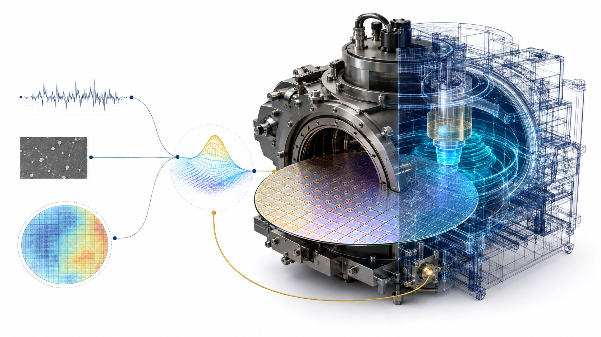

Course
AI for Semiconductor Manufacturing (ECE 8803 AI4)

This course explores how artificial intelligence and machine learning can transform semiconductor process technology, metrology, manufacturing, and digital twins through hands-on Python labs, real fab-inspired datasets, and research-driven projects.
The course launched in Fall 2026 as an ongoing graduate course in Georgia Tech ECE, taught by Prof. Asif Khan; this page will continue to be updated as the semester progresses.
The syllabus is available here.
Recorded lectures are available in the YouTube playlist.
Module 1 - Introductions:
Module 2 - Fault Detection and Classification:
Python notebook for Module - Fault Detection and Classification [GitHub]
Module 3 - Defect Classification:
Lecture 2: Wafer Maps - Physics Beats Parameters, Until It Doesn't [pdf] [Recorded Lecture - Youtube]
Python notebook for Module - Defect Classification [GitHub]
Module 4 - Statistical Process Control:
Lecture 1: Statistical Process Control-1: Variation, Standard Deviation & 3σ [pdf] [Recorded Lecture - Youtube]
Lecture 2: Statistical Process Control-2: Control Charts, Signals & Cp/Cpk [pdf] [Recorded Lecture - Youtube]
Lecture 3: Statistical Process Control-3: Gauge R&R, Run-to-Run Control & ML [pdf] [Recorded Lecture - Youtube]
Python notebook for Module - Statistical Process Control [GitHub]
Module 5 - Virtual Metrology:
Python notebook for Module - Virtual Metrology [GitHub]
Module 6 - Test & Qualification:
Lecture 2: Reliability Qualification: Predicting Ten Years from Weeks [pdf] [Recorded Lecture - Youtube]
More modules will be added as the Fall 2026 semester progresses.